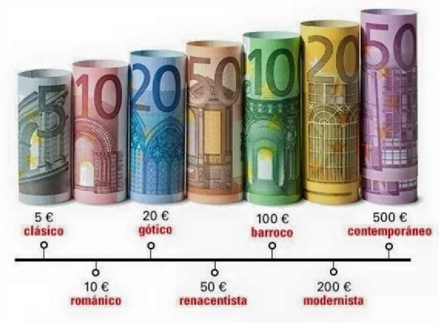

El 1 de enero de 1999, el euro pasó a ser la moneda de más de 300 millones de europeos. Durante los tres primeros años fue una moneda que no circulaba y que se utilizó únicamente a efectos contables, por ejemplo, en los pagos electrónicos. El efectivo en euros no entró en circulación hasta el 1 de enero de 2002, fecha en la que reemplazó a los billetes y monedas nacionales, como el franco belga o el marco alemán, a tipos de conversión irrevocables.
Actualmente, los billetes y monedas en euros tienen curso legal en 19 de los 28 Estados miembros de la Unión Europea, incluidos los departamentos de ultramar y los territorios e islas que forman parte de esos Estados o que tienen un estatuto de asociación con ellos. Estos países integran la zona del euro. Los microestados de Andorra, Mónaco, San Marino y Ciudad del Vaticano utilizan también el euro en virtud de un acuerdo formal con la Comunidad Europea. Montenegro y Kosovo también utilizan la moneda única, aunque no existe un acuerdo formal.
La serie de monedas en euros comprende ocho denominaciones diferentes: 1, 2, 5, 10, 20 y 50 céntimos, 1€ y 2€. Las monedas en euros tienen una cara común y una cara nacional. La cara nacional indica el país emisor. El diseño de las caras comunes de las monedas es obra de Luc Luycx, de la Real Fábrica de la Moneda de Bélgica.
En ellas aparece la Unión Europea o Europa y simbolizan la unidad de la UE. La monedas de 5, 2 y 1 céntimo muestran la posición de Europa en relación con África y Asia en el globo terráqueo.
Las monedas en euros pueden utilizarse en todos los países de la zona del euro.
| Tipos de conversión irrevocables del euro | |
|---|---|
| € | Moneda |
| 1 | BEF 40,3399 (francos belgas) |
| 1 | DEM 1,95583 (marcos alemanes) |
| 1 | EEK 15,6466 (coronas estonias) |
| 1 | IEP 0,787564 (libras irlandesas) |
| 1 | GRD 340,750 (dracmas griegas) |
| 1 | ESP 166,386 (pesetas españolas) |
| 1 | FRF 6,55957 (francos franceses) |
| 1 | ITL 1936,27 (liras italianas) |
| 1 | CYP 0,585274 (libras chipriotas) |
| 1 | LVL 0,702804 (lats letón) |
| 1 | LTL 3,45280 (litas lituanas) |
| 1 | LUF 40,3399 (francos luxemburgueses) |
| 1 | MTL 0,429300 (liras maltesas) |
| 1 | NLG 2,20371 (florines holandeses) |
| 1 | ATS 13,7603 (chelines austríacos) |
| 1 | PTE 200,482 (escudos portugueses) |
| 1 | SIT 239,640 (tólares eslovenos) |
| 1 | SKK 30,1260 (coronas eslovacas) |
| 1 | FIM 5,94573 (marcos finlandeses) |
Billetes en circulación
Toda la información recogida en esta página web, se ha obtenido de la página oficial del Banco Central Europeo y de la Fabrica Nacional de Moneda y Timbre (F.N.M.T.)